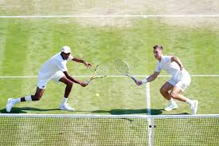

The origins of tennis are a matter of dispute. Some say that early versions of the game were invented in ancient Egypt, a theory based on the origins of the name. It is sometimes claimed that the name ‘tennis’ derives from the Egyptian town of Tinnis alongside the Nile, and that the word ‘racquet’ evolved from the Arabic word for the palm of the hand, ‘rahat’. However, there is more evidence to suggest that the game originated in France in the 11th or 12th century and was played by French monks who played handball against the monastery walls or over a rope strung across a courtyard. The game was called ‘jeu de paume’, meaning ‘game of the hand’. Many believe that the name ‘tennis’ is derived from the French ‘tenez’, which means ‘take this’ or ‘be ready’, and was said by the server before the point began. As the game became more popular, players began to use gloves in an attempt to avoid the build up of calluses. Over time wooden bats were added and balls were modified to be made of a wad of hair, wool or cork, wrapped in string and cloth or leather. In later years they were hand-stitched in felt which resembled the modern baseball.